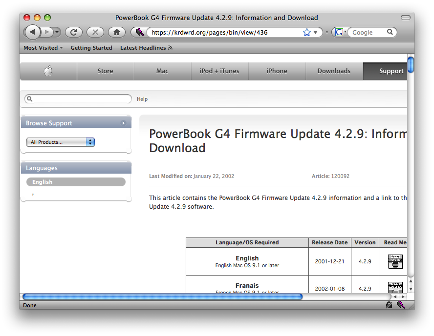
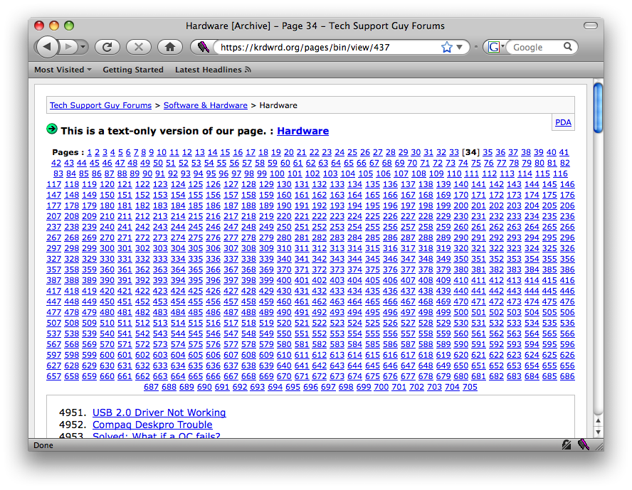
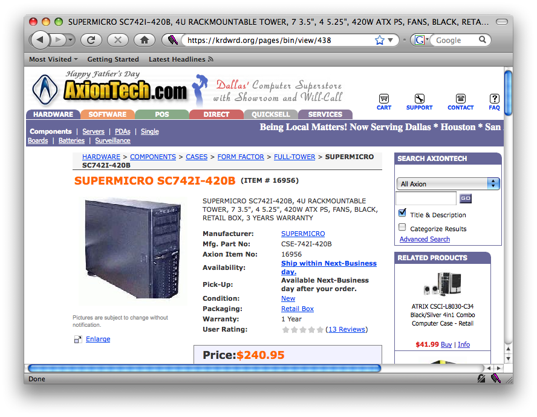
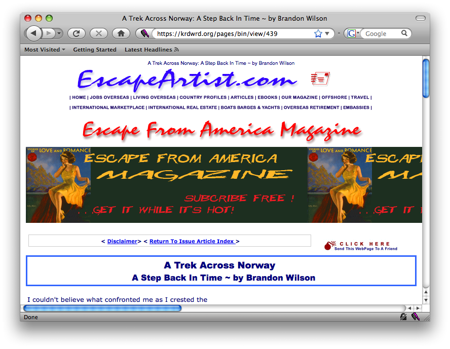
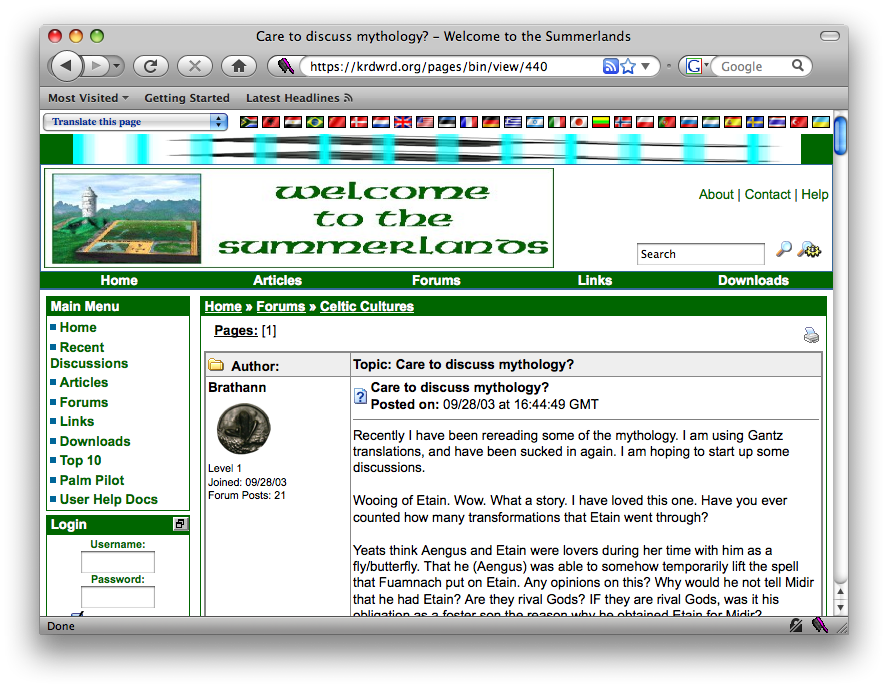

Examples - Medium
- Example 5
Remember which language you should tag (and that all text in another language is bad). How should you tag the enumerations?

- Example 6
This one is all about enumerations.

- Example 7
Once you have decided how much of the text is junk, this is fairly easy. Propagate is you friend.

- Example 8
This can be easy with the right strategy. One of the rare pages where it is easier if you don't start with tagging everything red first.

- Example 9
Sometimes there are no technical difficulties.

egon w. stemle
2014-11-05